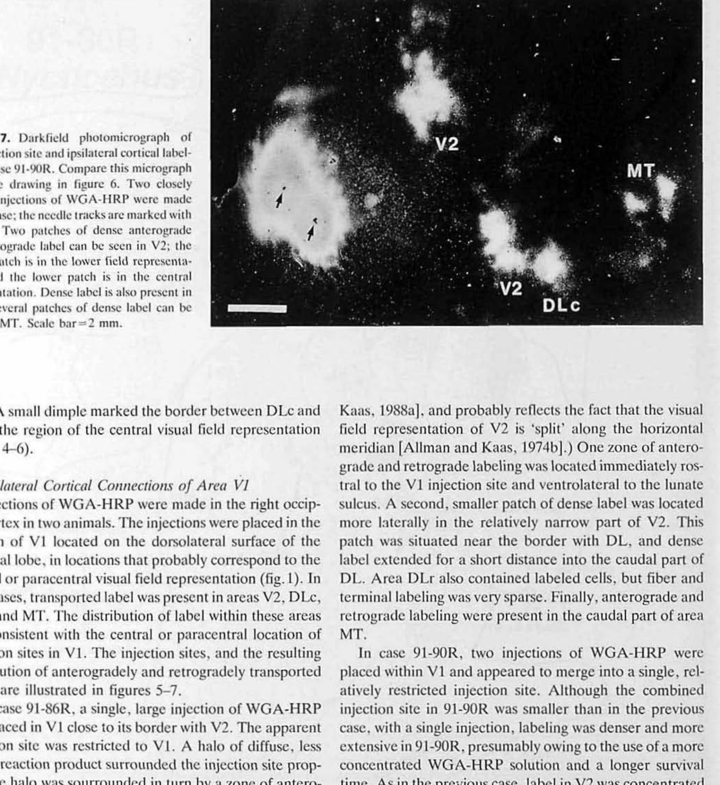
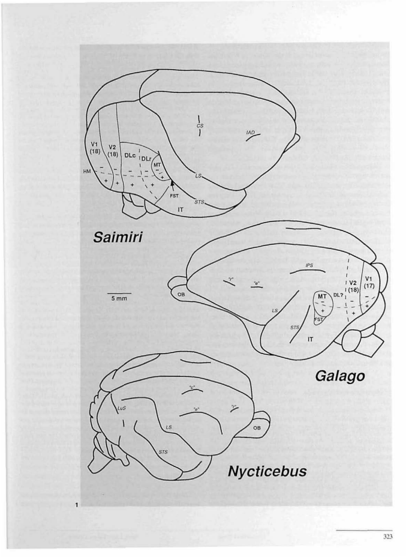
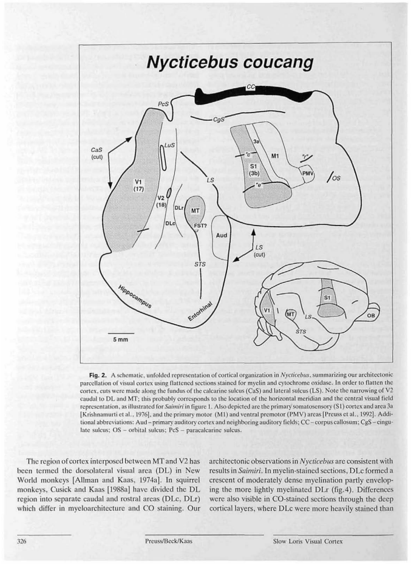
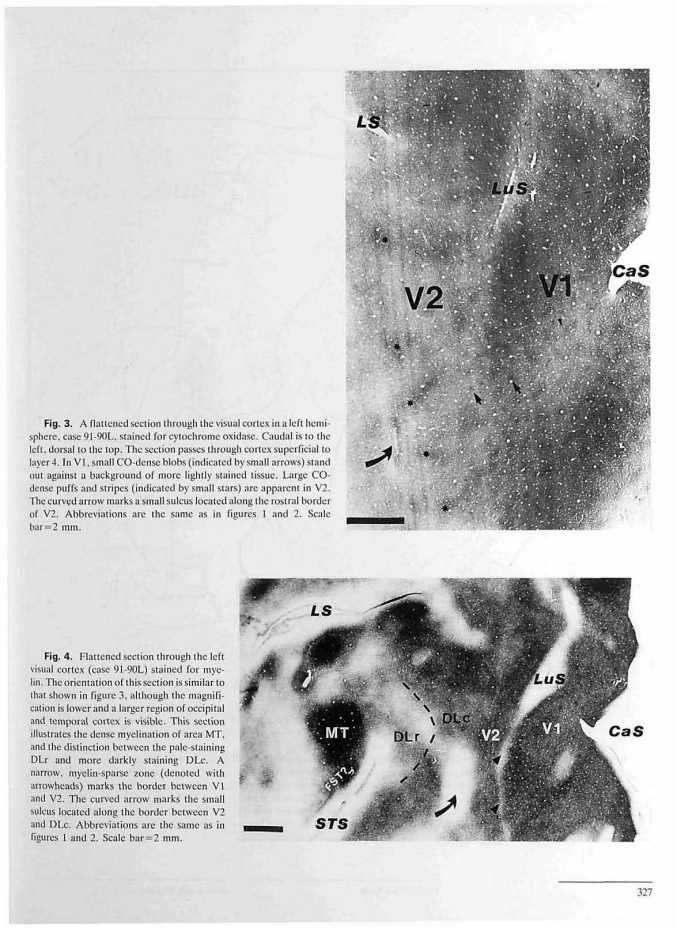
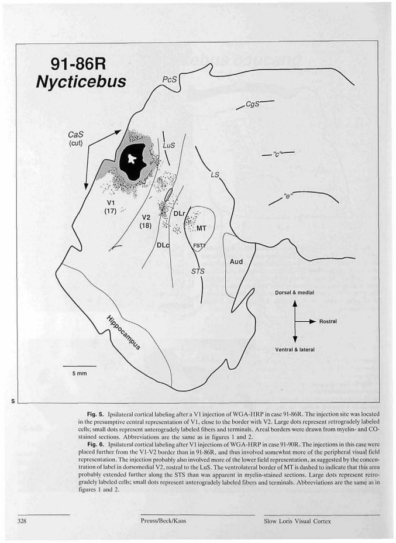
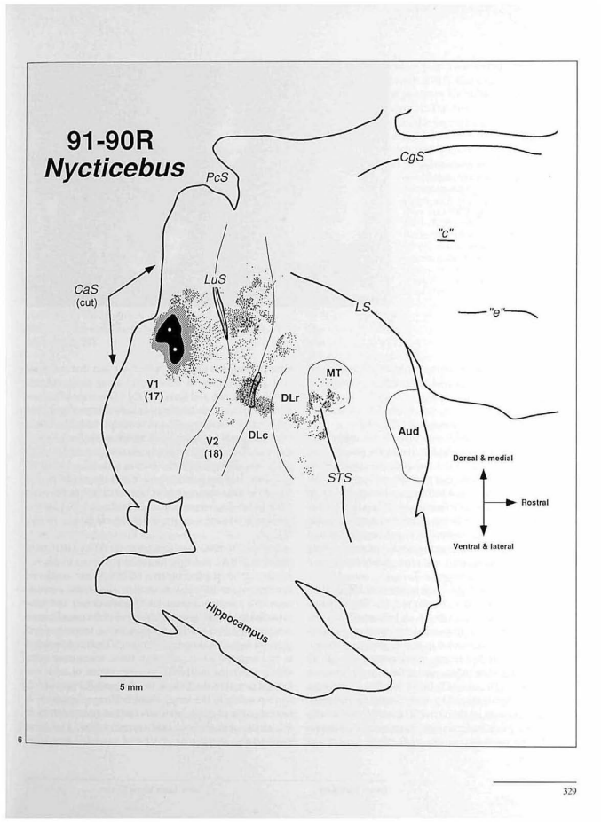
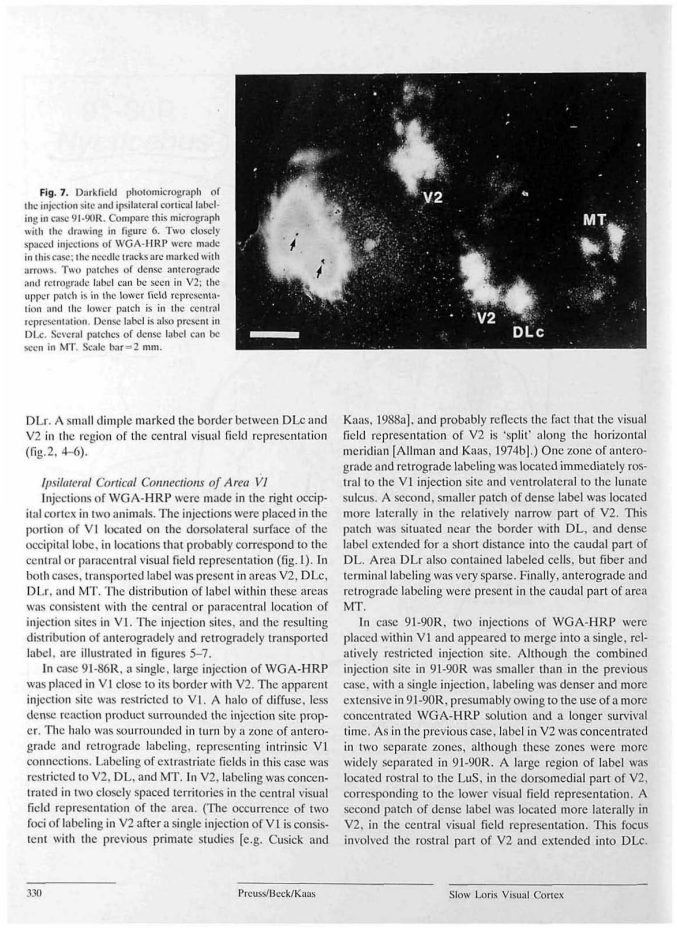

Latest full-dataset recheck: all cases together, source toggles and current inventory
Flatmap tracing reviewFlatmap tracing review
Source image, saved anatomical outlines and scale endpoints. Unfinished fields are NA.
fig02_schematic — not reported
Dense tracing on 4 pixels/PDF point source rendering. Anatomical interpretation provisional; hide overlay in the precision review to inspect the printed stroke.
ImageJ ROIs · Calibrated TIFF
| Field | mm² | % neocortex | Status |
|---|
| MT | 16.503 | NA | provisional; anatomical review required |
| Aud (auditory complex) | 27.404 | NA | provisional; anatomical review required |
| S1 (3b) | 85.110 | NA | provisional; anatomical review required |
| 3a | 21.671 | NA | provisional; anatomical review required |
| M1 | 51.418 | NA | provisional; anatomical review required |
| PMV | 6.907 | NA | provisional; anatomical review required |
| V1 | NA | NA | not_measurable |
| V2 | NA | NA | not_measurable |
| DLc | NA | NA | not_measurable |
| DLr | NA | NA | not_measurable |
| FST | NA | NA | not_measurable |
fig03_photo — 91-90
Local flattened section: field extents run beyond the photographed window. Blobs and arrowheads are not complete areal envelopes.
Calibrated TIFF
| Field | mm² | % neocortex | Status |
|---|
| V1 | NA | NA | not_measurable |
| V2 | NA | NA | not_measurable |
fig04_photo — 91-90
Stain boundaries are diffuse or frame-clipped; the dense MT/FST patch has no separately delineated full MT perimeter. Do not convert a stain threshold into a field boundary.
Calibrated TIFF
| Field | mm² | % neocortex | Status |
|---|
| V1 | NA | NA | not_measurable |
| V2 | NA | NA | not_measurable |
| DLc | NA | NA | not_measurable |
| DLr | NA | NA | not_measurable |
| MT | NA | NA | not_measurable |
| FST | NA | NA | not_measurable |
fig05_right — 91-86
Dense tracing on 4 pixels/PDF point source rendering. Anatomical interpretation provisional; hide overlay in the precision review to inspect the printed stroke.
ImageJ ROIs · Calibrated TIFF
| Field | mm² | % neocortex | Status |
|---|
| MT/FST? drawn envelope | 23.624 | NA | provisional; anatomical review required |
| Aud (auditory complex) | 30.542 | NA | provisional; anatomical review required |
| V1 | NA | NA | not_measurable |
| V2 | NA | NA | not_measurable |
| DLc | NA | NA | not_measurable |
| DLr | NA | NA | not_measurable |
| FST | NA | NA | not_measurable |
fig06_right — 91-90
Dense tracing on 4 pixels/PDF point source rendering. Anatomical interpretation provisional; hide overlay in the precision review to inspect the printed stroke.
ImageJ ROIs · Calibrated TIFF
| Field | mm² | % neocortex | Status |
|---|
| MT | 11.883 | NA | provisional; anatomical review required |
| Aud (auditory complex) | 18.216 | NA | provisional; anatomical review required |
| V1 | NA | NA | not_measurable |
| V2 | NA | NA | not_measurable |
| DLc | NA | NA | not_measurable |
| DLr | NA | NA | not_measurable |
| FST | NA | NA | not_measurable |
fig07_photo — 91-90
Tracer photomicrograph supplies local relationships and labeling rather than closed full-field perimeters; repeat of right-hemisphere reconstruction in figure 6.


Calibrated TIFF
| Field | mm² | % neocortex | Status |
|---|
| V1 | NA | NA | not_measurable |
| V2 | NA | NA | not_measurable |
| MT | NA | NA | not_measurable |
All-figure source assessment
Preuss_etal_1993: 7 numbered figures assessed; 10 field/fragment measurements. Saved observations, where present, are provisional. No certified complete-neocortex denominator is available.
Figure inventory · Methods and limits · Measurements · Complete-field absolute-area summary
Figure 1 all — assessed_excluded
Cross-species projected brain summaries. Perspective locators do not supply a flattened specimen surface.
PDF page3; review preview only.

Figure 2 main schematic unfolded map — digitized_provisional
composite_parcellation. 6 provisional closed field/component contour(s); 5 explicit not-measurable field entries. Dense tracing on 4 pixels/PDF point source rendering. Anatomical interpretation provisional; hide overlay in the precision review to inspect the printed stroke.
Main maps: fig02_schematic
PDF page6; review preview only.

Figure 3 flattened cortical photomicrograph — assessed_not_measurable
histological_detail. No supported field area: 2 explicit NA entries. Local flattened section: field extents run beyond the photographed window. Blobs and arrowheads are not complete areal envelopes.
Main maps: fig03_photo
PDF page7; review preview only.

Figure 4 flattened cortical photomicrograph — assessed_not_measurable
histological_detail. No supported field area: 6 explicit NA entries. Stain boundaries are diffuse or frame-clipped; the dense MT/FST patch has no separately delineated full MT perimeter. Do not convert a stain threshold into a field boundary.
Main maps: fig04_photo
PDF page7; review preview only.
Figure 5 right hemisphere — digitized_provisional
case_flatmap. 2 provisional closed field/component contour(s); 5 explicit not-measurable field entries. Dense tracing on 4 pixels/PDF point source rendering. Anatomical interpretation provisional; hide overlay in the precision review to inspect the printed stroke.
Main maps: fig05_right
PDF page8; review preview only.

Figure 6 right hemisphere — digitized_provisional
case_flatmap. 2 provisional closed field/component contour(s); 5 explicit not-measurable field entries. Dense tracing on 4 pixels/PDF point source rendering. Anatomical interpretation provisional; hide overlay in the precision review to inspect the printed stroke.
Main maps: fig06_right
PDF page9; review preview only.

Figure 7 flattened cortical photomicrograph — assessed_not_measurable
histological_detail. No supported field area: 3 explicit NA entries. Tracer photomicrograph supplies local relationships and labeling rather than closed full-field perimeters; repeat of right-hemisphere reconstruction in figure 6.
Main maps: fig07_photo
PDF page10; review preview only.

Enlarged source-toggle precision review